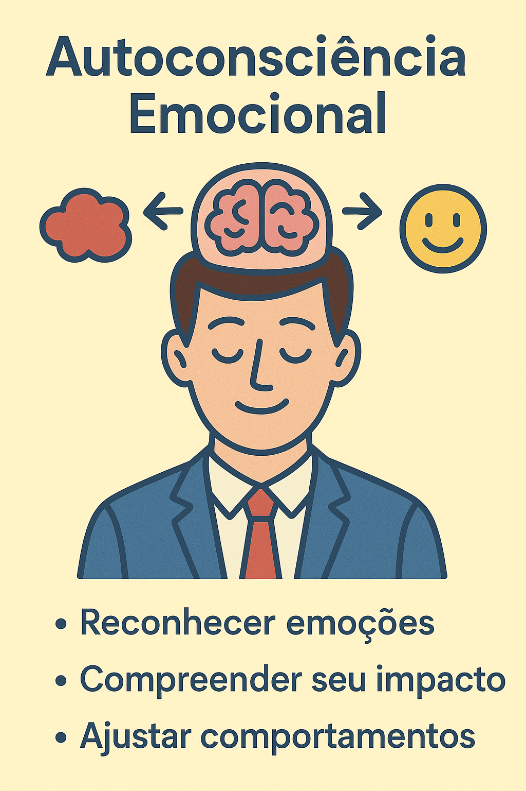

Disciplina Liderança e a Construção das Relações Sustentáveis
Trabalho Sobre Desenvolvimento de Líderes

Autoconsciência emocional
Capacidade de reconhecer seus próprios estados emocionais...
Autoconsciência emocional
Capacidade de reconhecer seus próprios estados emocionais, entender como eles influenciam decisões e comportamentos, e ajustar-se quando necessário. É a base da inteligência emocional...